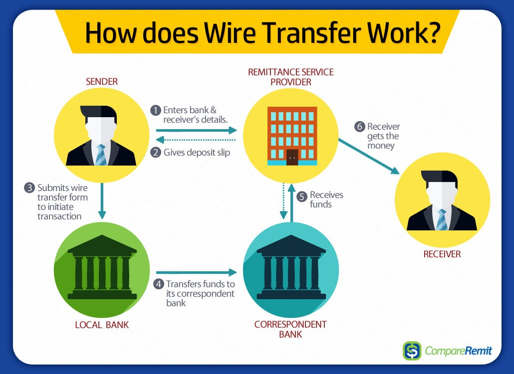
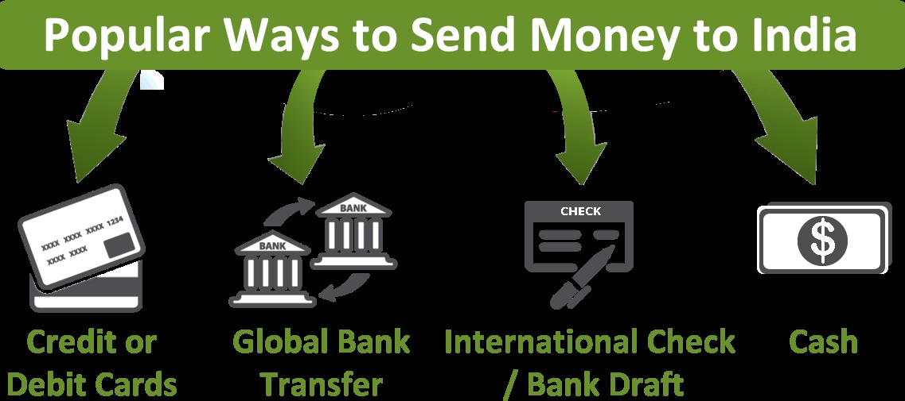

ACH stands for Automated Clearing House and is an electronic funds transfer system. In the US, ACH is governed by The National Automated Clearing House Association's (NACHA) operating rules that regulate the inter-banking clearance of electronic payments and transactions among participating financial institutions. When you send money from the bank account in the US via ACH transfer, the recipient bank receives the amount transferred in 4 working days that can be picked up the recipient the very next day. There are no extra costs, visit banks, or sending checks associated with ACH transfer. It helps you save time and money.
2. Online Transfer-
Online Transfer is the easiest way to send money. All you need is an internet connection and use of local banking services to transfer money to an account in India. You will need information including the name and address of the account holder or the recipient, information about the financial institution the money is being sent to, and the IBAN or SWIFT code of the recipient bank. This method is especially recommended if you do regular transfer of funds. You can avoid the steep banking charges and the transaction can be done from the comfort of your home.
3. Wire Transfer-
Wire Transfer is one of the most common ways to make international money transfer. The sender has to go to an institution like bank or other agencies or branches of agencies like Western Union, Xoom, or Remit2India, and send the money. The wire transfer facility gathers information from the sender about the recipient and recipient's bank or some other facility where the money needs to be sent. After the information is acquired from the sender, the sender institution initiates the wire transfer, and sends the message to the receiving institution. This process takes a few days.

4. PayPal
Paypal allows individuals to transfer money electronically from one account to another. A fee is charged to the recipient although the transaction is free for the sender. In addition to the exchange rate of transfer, the fee is 3.9% per transaction for international transfers.
5. International Money Order
International money orders are a safe, cheap, and fast way of sending money especially to remote places in India. The money orders can be deposited into your bank account or cashed at many check cashing locations. Most of them will require an ID to cash the checks. It is simple to purchase and no checking account is required. It is an ideal way to send money if the amount is small.
6. Bank Drafts and Cashier’s Checks
Bank Drafts and Cashier's Checks are available at any bank. There is a fee associated with these services and it may take some time to cash the checks in India. The cost of purchasing a bank draft is higher than money order. This form of money transfer is traceable in case checks or drafts don't reach the destination. They are more economical albeit time-consuming.
7. Personal Checks
Sending a check in foreign currency is another option. Cashing the check can be delayed because the bank has to verify the deposit. The recipient may have to pay an additional fee for the exchange rate and encashment. This method is safer than sending cash by mail because you can cancel a check if it fails to arrive at its destination.
8. E-mail Money Transfer
E-mail money transfer is an online money transfer. It is like a bank to bank transfer but here the sender need not have the receiver's bank information. The sender has to log on to his bank's website and fill a form. The form does not ask for too many details and the sender has to give the receiver's e-mail id and answer a security question. The sender shares the answer to the security question only with the receiver. An e-mail is sent by the bank to the receiver and in order to validate his identity, the receiver has to answer the security question correctly. If he does answer correctly, he will be forwarded to his bank's website, asked for the details of his account, and complete the transaction. This process takes a day if the receiver's bank is in the list provided by the sender's bank. If not, then the transaction takes 3-5 days.
